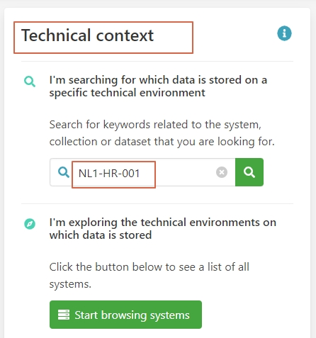
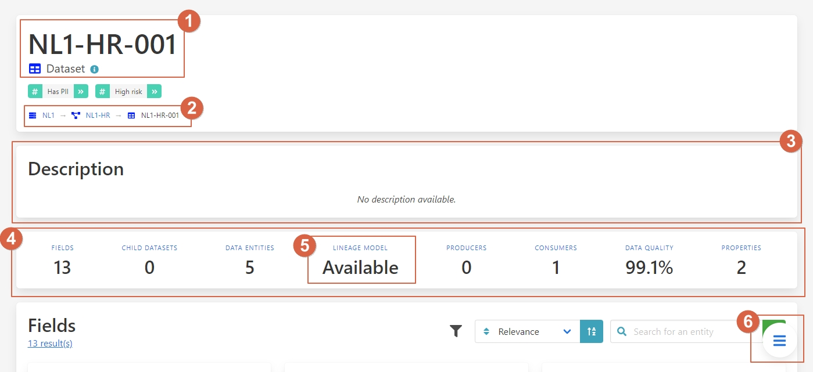
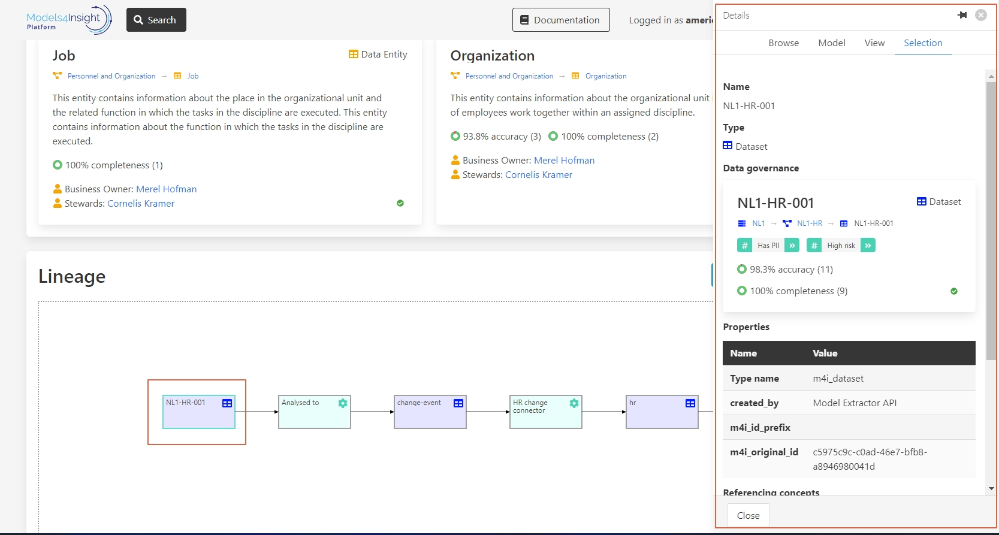
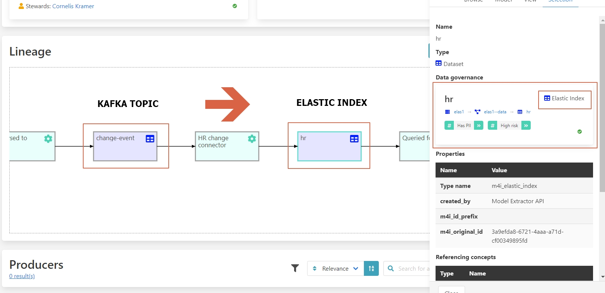

Managing data pipelines with full lineage
User story
In many organizations data is ingested from various source systems and then transformed and consumed based on different technologies. While the technologies are specific to the organization, data processing usually is based on multiple transformation steps. Changing the output of a source or a transformation step is potentially impacting subsequent transformation steps. A data scientist changing the output schema of his analysis or a data integration expert altering the output of a transformation step use an impact analysis to investigate whether the planned change is effecting other transformation steps or data users. The challenge is to identify how the data is used and if it is being used who is the responsible person owning this part.
Overlooking a dependent transformation step or a data usage can cause subsequent data processing to fail with a consequence of inconsistent or wrong data in other systems or in dashboards used for decision making.
As part of data governance also linage information is collected in Aurelius Atlas. That is, capturing the data processing and the data usage as processes, where each process may consume data and may produce data. Looking at the linage graph directly shows the consumers of data, which allows to relate it to the responsible persons.
To illustrate the process of finding relevant information from a linage graph and who is responsible this one, the following scenario is described: An implementer of data pipeline wants to extend the schema of a particular table. To make sure that the subsequent processing will not fail, he wants to know who is using the data such that the subsequent processing is also adjusted.
Step by step guide
You can search for the table NL1-HR-001 in the technical context
You get a list of results, lets click in the called NL1-HR-001

As you can see in the detail page of the dataset, you have all these elements:
1. – Name and type: Of the dataset
2. – Hierarchy: Where is located inside the system
3. – Description: Gives you information about this dataset
4. – Summary of page structure: Quick view of all the elements of the page
5. - Lineage model: If is available or not
6. - Button: to navigate for the structure of the page
To find the Lineage model:
1. – Click on the button.
2 – Click on Lineage Model

Once in the Lineage model, you click on the source to see the detail page.
In this detail page you can find all the information about the data, and how is this one being used.
Here is an overview of the elements on the detail page:
1– Name and type of data
2– Data governance
3– Properties of the data
Let’s follow the flow of the data, if you click on the next square called Change-event, you can see how this data was change to a Kafka topic.

If you click on the next one, you can see that this Kafka topic was converted into an Elastic index.
Whit the lineage graphs you’re able to see where the data is going, this it’s not limited to a particular system but it’s across different applications we are tracking the governance information.
Benefits
1 – Clear information about where the data is stored
2 – See the entire data flow step by step
3 – How this data is being used
4 - Track sensitive information
5 – Improve Data compliance